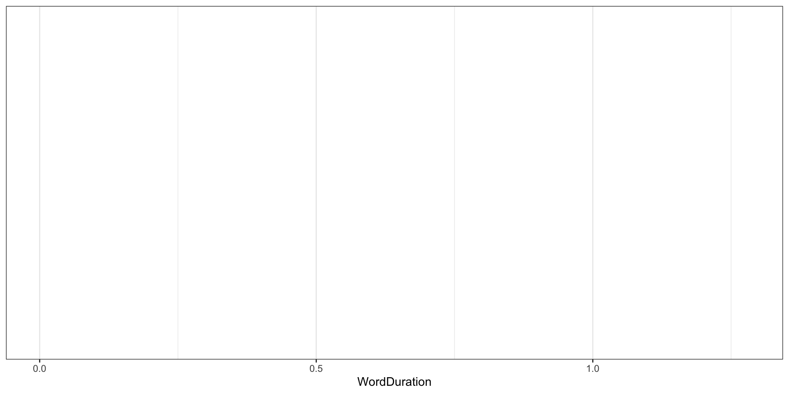
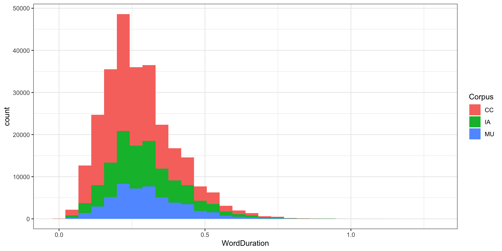
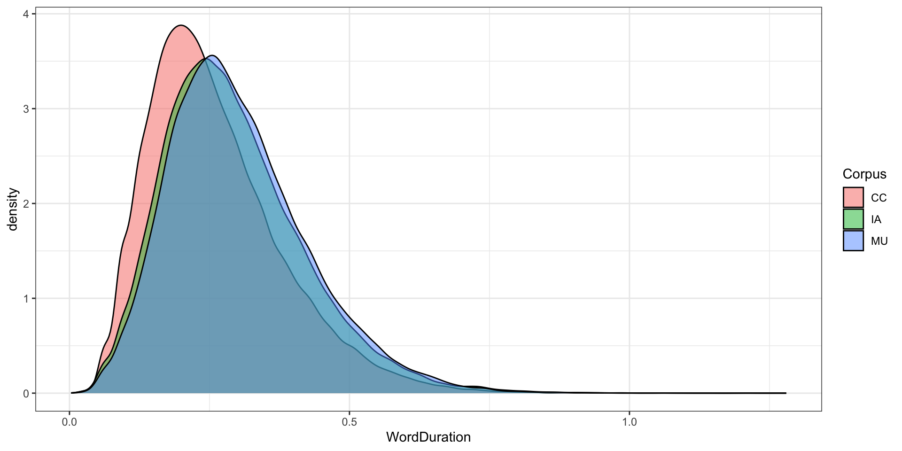
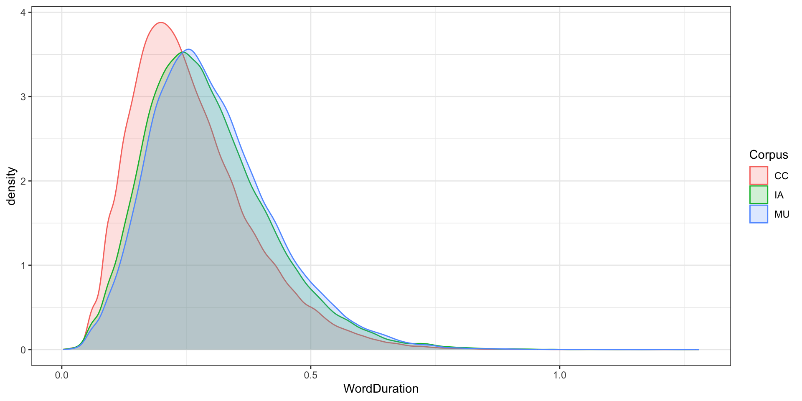
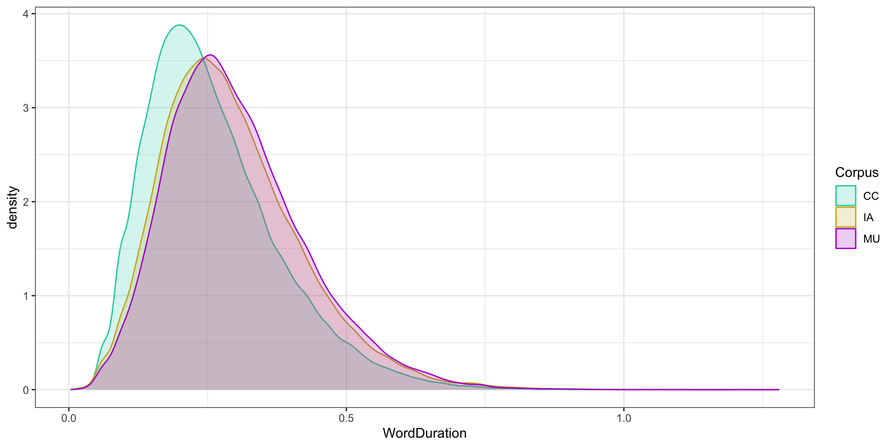
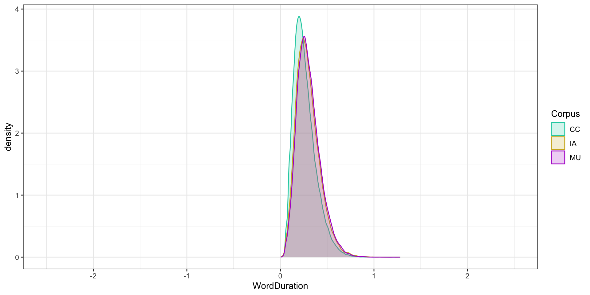
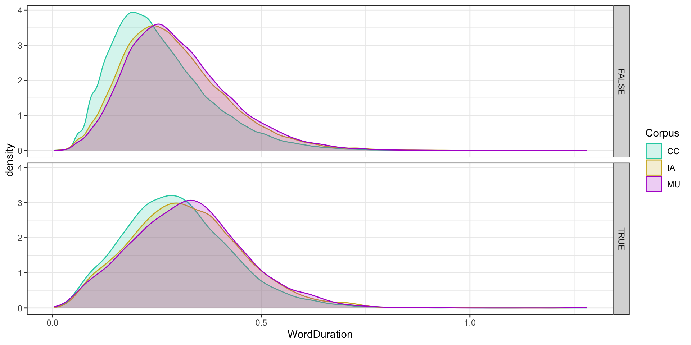
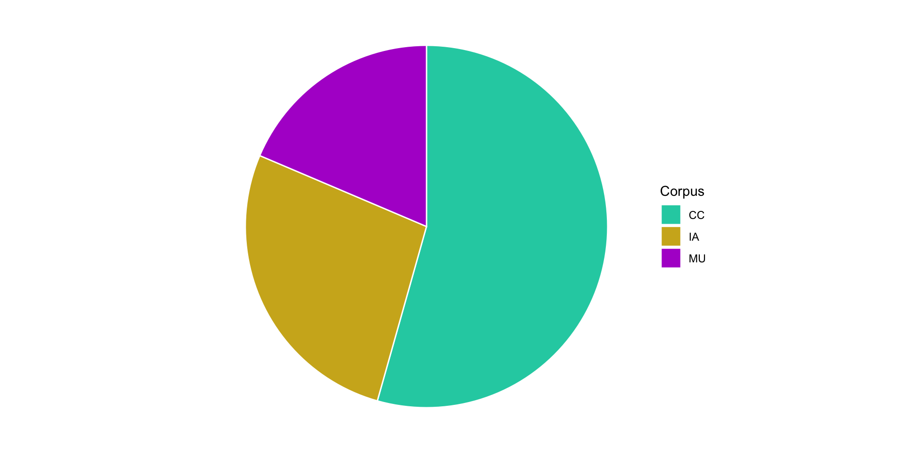

Foundations
Session 3: Exploratory Data Visualisation
Joshua Wilson Black ![]()
Te Kāhui Roro Reo | New Zealand Institute of Language, Brain and Behaviour
Te Whare Wānanga o Waitaha | University of Canterbury
Overview
Overview
- New infrastructure: Markdown
- Download some data from OSF.io.
- Topic: Word usage factors and duration.
- We’ll use this for the rest of the ‘Foundations’ sessions.
- Exploratory visualisation with
ggplot2.
Markdown
Markdown
- Markdown is a ‘markup’ language
- Like LaTeX or HTML.
- Markdown was designed to be easy to read (for a human).
- We combine text in markdown with blocks of code.
- This is a variety of ‘literate programming’.
- Markdown documents can be turned into pdf (via LaTeX), HTML, OpenOffice or Word files.
## Markdown
- Markdown is a 'markup' language
- Like LaTeX or HTML.
- Markdown was designed to be easy to read (for a human).
- We combine text in markdown with blocks of code.
- This is a variety of 'literate programming'.
- Markdown documents can be turned into pdf (via LaTeX), HTML, OpenOffice
or Word files.<section id="markdown-1" class="slide level2">
<h2>Markdown</h2>
<ul>
<li class="fragment">Markdown is a ‘markup’ language
<ul>
<li class="fragment">Like LaTeX or HTML.</li>
</ul></li>
<li class="fragment">Markdown was designed to be easy to read (for a human).</li>
<li class="fragment">We combine text in markdown with blocks of code.</li>
<li class="fragment">This is a variety of ‘literate programming’.</li>
<li class="fragment">Markdown documents can be turned into pdf (via LaTeX), HTML, OpenOffice or Word files.</li>
</ul>
</section>Quarto
- Quarto is a “an open-source scientific and technical publishing system”
- Developed by Posit (formerly RStudio)
- It is almost entirely compatible with RMarkdown
- Quarto is ‘multilingual’ — designed from scratch to work with Python, Julia, etc.
- Quarto documents allow us to run code blocks and publish the output.
Source view of a Quarto Document open in RStudio.
Tips and tricks
- RStudio provides a ‘Source’ and a ‘Visual’ mode (toggle at top of source window).
- The ‘Visual’ mode is more like a traditional word processor.
- I always use the ‘Source’ mode 🤓
- Keyboard shortcuts:
- Ctrl/Cmd + Alt + I (Insert new code block)
- Ctrl/Cmd + Alt + N (Run next code block.)
NZILBB template
- Work-in-progress: an NZILBB Quarto template
# Run in terminal
quarto use template JoshuaWilsonBlack/nzilbb_docGet some data
Word duration data
- We will be exploring data from Sóskuthy and Hay (2017)
- Topic: how word ‘usage factors’ affect word duration.
- Usage factors include how frequent a word is, how predictable it is in context etc.
- Upshot: Change in usage factors over long time periods affects word duration.
- Upshot: There’s some kind of feedback mechanism between production and perception of words.
- Data is shared via OSF.io
Plotting with ggplot2
The ‘grammar’
- The ‘gg’ in
ggplot2stands for ‘grammar of graphics’. - What’s the grammar?
…a statistical graphic is a mapping from data to aesthetic attributes (colour, shape, size) of geometric objects (points, lines, bars). The plot may also contain statistical transformations of the data and is drawn on a specific coordinate system. (H. Wickham 2016, 4)
- See: The Grammar of Graphics (Wilkinson 1999)
The implementation
- Data
- Aesthetic mappings (from variables to visual properties)
- Layers (points, lines, bars…)
- Scales and co-ordinates (specify how the mappings work)
- Facets (subgroups in data -> subplots)
- Theme (e.g., font size, background colour…)
Data
| ...1 | TargetOrthography | foll_wf | prev_wf | Speaker | Corpus | YOB | WordDuration | TargetPhonemes | dur.context | dur.context.avg | prev_pred_wf_log | foll_pred_wf_log | prev_info_wf_avg | foll_info_wf_avg | syll.length.3 | seg.no | repeated.20 | wclass | initial | final | unigram.google.gb | unigram.diff.google.gb | rep.times.avg | final.prop.log | foll.diff | prev.diff | final.diff | dur.context.diff | syll.no |
|---|---|---|---|---|---|---|---|---|---|---|---|---|---|---|---|---|---|---|---|---|---|---|---|---|---|---|---|---|---|
| 1 | able | to | only | speaker426 | CC | 1976 | 0.2600000 | 1bP | 305 | 0.3101003 | -3.962387 | -1.94206 | 1.986253 | 2.008305 | 0.1189995 | 3 | FALSE | a | FALSE | FALSE | -8.647486 | 0.0018382 | 5.36014 | -5.283204 | -0.154497 | -0.503365 | -0.5626083 | -0.1447357 | 2 |
| 2 | able | to | were | speaker66 | CC | 1926 | 0.3400000 | 1bP | 310 | 0.3101003 | -2.403104 | -1.94206 | 1.986253 | 2.008305 | 0.1606245 | 3 | FALSE | a | FALSE | FALSE | -8.647486 | 0.0018382 | 5.36014 | -5.283204 | -0.154497 | -0.503365 | -0.5626083 | -0.1447357 | 2 |
| 3 | able | to | was | speaker256 | IA | 1921 | 0.3900000 | 1bP | 310 | 0.3101003 | -2.800220 | -1.94206 | 1.986253 | 2.008305 | 0.2388915 | 3 | FALSE | a | FALSE | FALSE | -8.647486 | 0.0018382 | 5.36014 | -5.283204 | -0.154497 | -0.503365 | -0.5626083 | -0.1447357 | 2 |
| 4 | able | to | were | speaker256 | IA | 1921 | 0.3000000 | 1bP | 310 | 0.3101003 | -2.403104 | -1.94206 | 1.986253 | 2.008305 | 0.1985703 | 3 | FALSE | a | FALSE | FALSE | -8.647486 | 0.0018382 | 5.36014 | -5.283204 | -0.154497 | -0.503365 | -0.5626083 | -0.1447357 | 2 |
| 5 | able | to | be | speaker105 | CC | 1965 | 0.0521634 | 1bP | 310 | 0.3101003 | -1.467725 | -1.94206 | 1.986253 | 2.008305 | 0.1449822 | 3 | FALSE | a | FALSE | FALSE | -8.647486 | 0.0018382 | 5.36014 | -5.283204 | -0.154497 | -0.503365 | -0.5626083 | -0.1447357 | 2 |
| 6 | able | to | be | speaker288 | MU | 1894 | 0.3100000 | 1bP | 310 | 0.3101003 | -1.467725 | -1.94206 | 1.986253 | 2.008305 | 0.1735298 | 3 | FALSE | a | FALSE | FALSE | -8.647486 | 0.0018382 | 5.36014 | -5.283204 | -0.154497 | -0.503365 | -0.5626083 | -0.1447357 | 2 |
Aesthetic mappings
Aesthetic mappings

ggplot2 sets up a default scale for the x-axis.
Layers
- Layers tend to start with
geom_. geom_histogram()creates a histogram.- Layers have options (arguments) which modify their appearance.
Layers

Layers (II)
- An alternative layer with the same aesthetic mapping.
geom_density()creates a density plot.
Layers (II)

Layers (III)
- We can go back and change the aesthetic mapping.
- NB: difference between ‘fill’ and ‘colour’!
Layers (III)

Scales
- Functions which start with
scale_help to specify aesthetic mappings. - i.e., this data value goes to that colour, etc.
Scales

Coordinates
big_dia |>
ggplot(
mapping = aes(
x = WordDuration,
fill = Corpus,
colour = Corpus
)
) +
geom_density(alpha = 0.2) +
scale_fill_manual(
values = c("MU" = "#b120cf", "IA" = "#cfb120", "CC" = "#20cfb1")
) +
scale_colour_manual(
values = c("MU" = "#b120cf", "IA" = "#cfb120", "CC" = "#20cfb1")
) +
coord_cartesian(xlim = c(-2.5, 2.5))- Coordinate systems also determine the mapping.
- A lot of overlap with scales.
Coordinates

Facets
big_dia |>
ggplot(
mapping = aes(
x = WordDuration,
fill = Corpus,
colour = Corpus
)
) +
geom_density(alpha = 0.2) +
scale_fill_manual(
values = c("MU" = "#b120cf", "IA" = "#cfb120", "CC" = "#20cfb1")
) +
scale_colour_manual(
values = c("MU" = "#b120cf", "IA" = "#cfb120", "CC" = "#20cfb1")
) +
facet_grid(vars(final))- We use facets to create subplots.
- Note use of
var()function.
Facets

The Forbidden Plot
- Pie charts are out of fashion.
- I used to (wrongly!) say you can’t even make them in
ggplot2.

What to do now
- Go to https://nzilbb.github.io/statistics_workshops/
- Work through the ‘Exploratory Data Visualisation’ chapter
References
Allaire, JJ, Yihui Xie, Christophe Dervieux, Jonathan McPherson, Javier Luraschi, Kevin Ushey, Aron Atkins, et al. 2024. rmarkdown: Dynamic Documents for r. https://github.com/rstudio/rmarkdown.
Müller, Kirill. 2020. here: A Simpler Way to Find Your Files. https://doi.org/10.32614/CRAN.package.here.
R Core Team. 2025. R: A Language and Environment for Statistical Computing. Vienna, Austria: R Foundation for Statistical Computing. https://www.R-project.org/.
Sóskuthy, Márton, and Jennifer Hay. 2017. “Changing Word Usage Predicts Changing Word Durations in New Zealand English.” Cognition 166 (September): 298–313. https://doi.org/10.1016/j.cognition.2017.05.032.
Wickham, H. 2016. Ggplot2: Elegant Graphics for Data Analysis. Use R! Springer International Publishing. https://books.google.co.nz/books?id=RTMFswEACAAJ.
Wickham, Hadley, Mara Averick, Jennifer Bryan, Winston Chang, Lucy D’Agostino McGowan, Romain François, Garrett Grolemund, et al. 2019. “Welcome to the tidyverse.” Journal of Open Source Software 4 (43): 1686. https://doi.org/10.21105/joss.01686.
Wilkinson, Leland. 1999. The Grammar of Graphics. Statistics and Computing. New York: Springer. http://digitool.hbz-nrw.de:1801/webclient/DeliveryManager?pid=2966363.
Xie, Yihui. 2014. “knitr: A Comprehensive Tool for Reproducible Research in R.” In Implementing Reproducible Computational Research, edited by Victoria Stodden, Friedrich Leisch, and Roger D. Peng. Chapman; Hall/CRC.
———. 2015. Dynamic Documents with R and Knitr. 2nd ed. Boca Raton, Florida: Chapman; Hall/CRC. https://yihui.org/knitr/.
———. 2025. knitr: A General-Purpose Package for Dynamic Report Generation in R. https://yihui.org/knitr/.
Xie, Yihui, J. J. Allaire, and Garrett Grolemund. 2018. R Markdown: The Definitive Guide. Boca Raton, Florida: Chapman; Hall/CRC. https://bookdown.org/yihui/rmarkdown.
Xie, Yihui, Christophe Dervieux, and Emily Riederer. 2020. R Markdown Cookbook. Boca Raton, Florida: Chapman; Hall/CRC. https://bookdown.org/yihui/rmarkdown-cookbook.
Zhu, Hao. 2024. kableExtra: Construct Complex Table with “kable” and Pipe Syntax. https://doi.org/10.32614/CRAN.package.kableExtra.